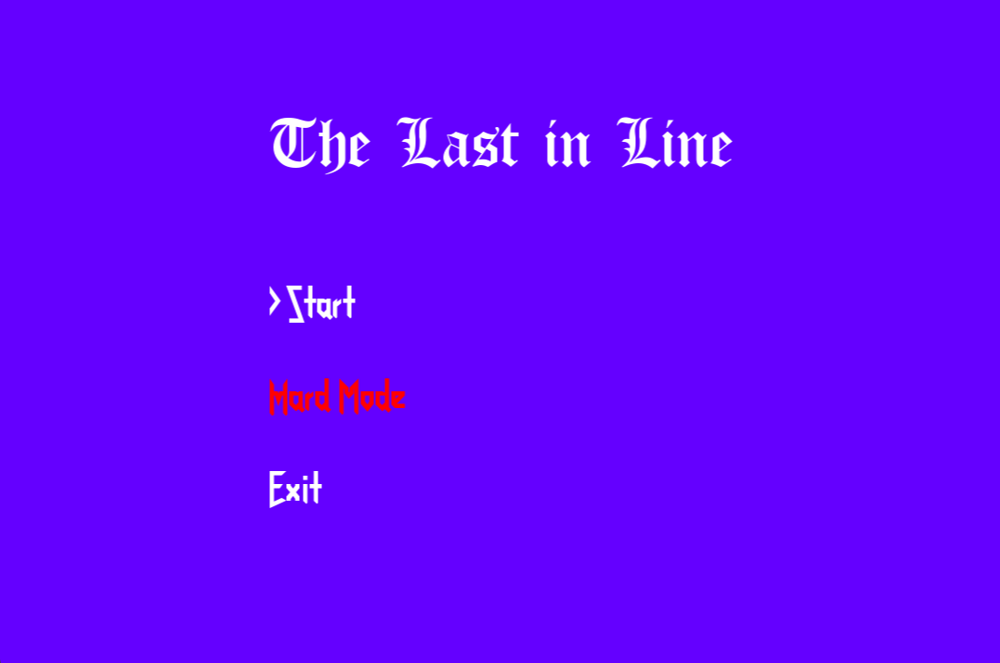

Dragon's Hoard
Engines/Languages: Unity, C#
Main development period: September 2026
Dragon's Hoard is a game developed by myself and two friends during a week-long game jam in mid-September 2026. The theme given was "Grow Something New", which we interpreted as a dragon building up a hoard by defeating villagers attempting to slay it. The main goal I had during the development period was to structure the code such that expanding on the game's content was as simple as possible. This was achieved by limiting the amount of hard-coded values through any player character scripts. This allows for more abilities to be added for the player, since the necessary scripts are generic enough.The Last in Line
Engines/Languages: C++

Title Screen for "The Last in Line"
Main development period: Oct 2025 - Dec 2025
The Last in Line is a simple recreation of the popular game Papers, Please in which the player declares the morality of the character that appears before them based on whether they match their 'passport'. This project had me learn mouse-based inputs within C++, use vectors as containers for objects, and better my use of encapsulation between elements of a program.